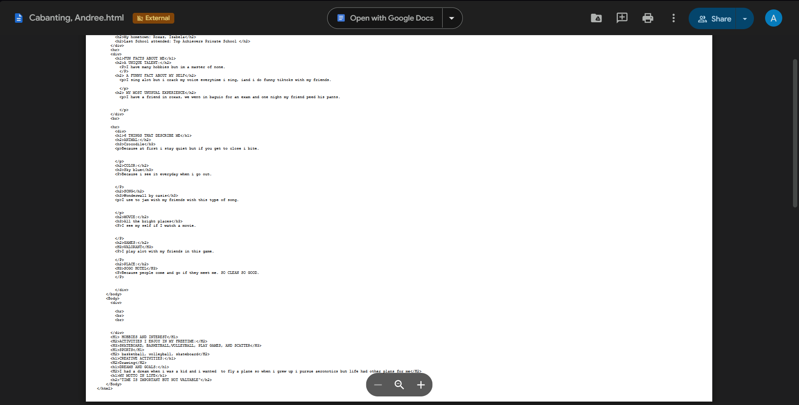
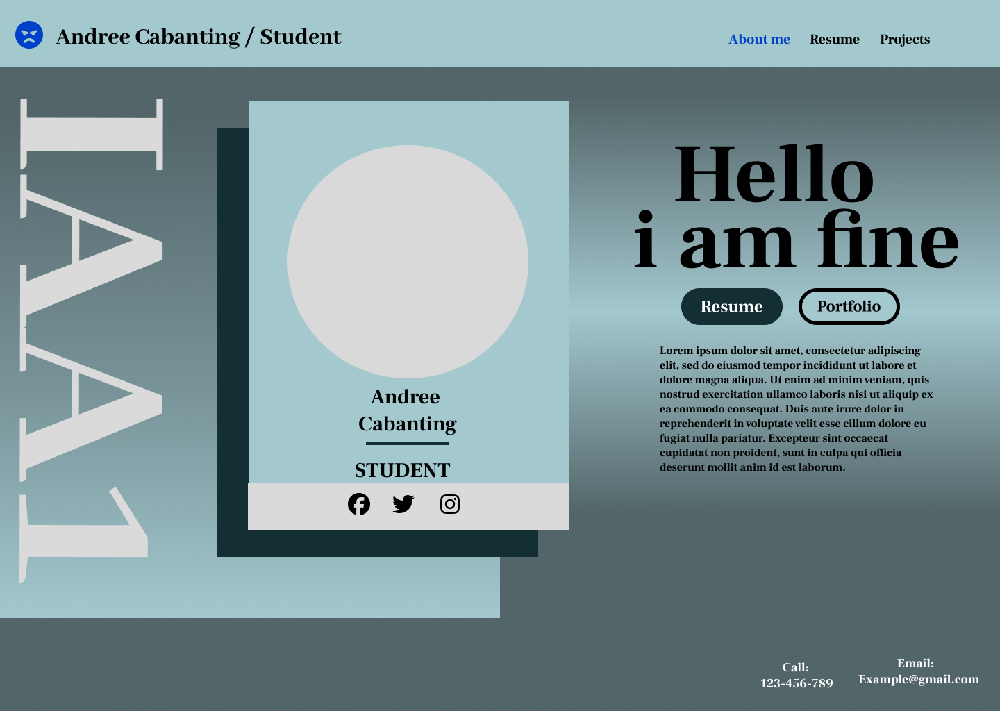

Exam Quizzes & Activities
A gallery of my quizzes, exercises, and school activities.

Activity 1

Activity 4

First Grading Exam

Midterms Activity 2
DownloadMidterms Exams

Mockup
Reflection
My first semester in college as a freshman has been a meaningful and memorable experience. Taking the subject Human-Computer Interaction helped me adjust to college life because the lessons were hands-on, understandable, and connected to everyday technology. What truly made the subject enjoyable was having a great teacher who explained concepts clearly and supported us throughout the course.
Our computer laboratory sessions were one of my favorite parts of the semester. Doing actual tasks on the computer made the lessons easier to understand and more enjoyable. I learned the importance of good design, user experience, and how humans interact with technology in the real world.
Overall, being a freshie this first semester taught me not only academic lessons but also confidence, teamwork, and curiosity. I am grateful for the positive experiences, the support of my teacher, and the new skills I gained. This semester has motivated me to look forward to the next chapters of my college journey.